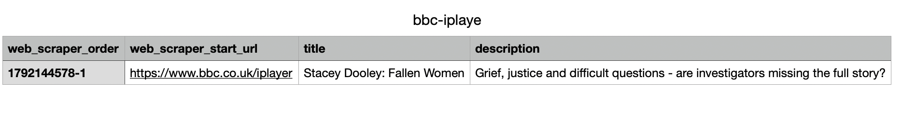
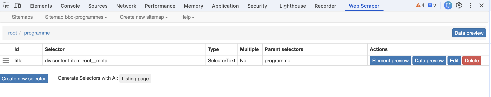
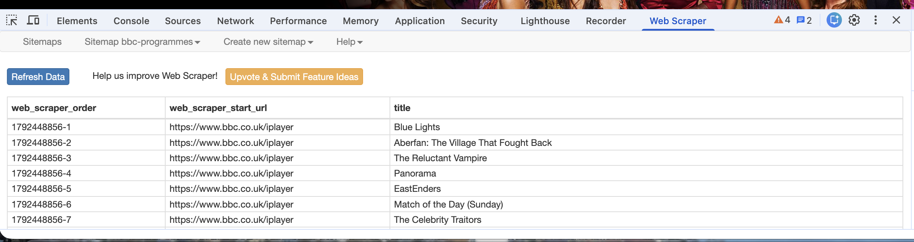
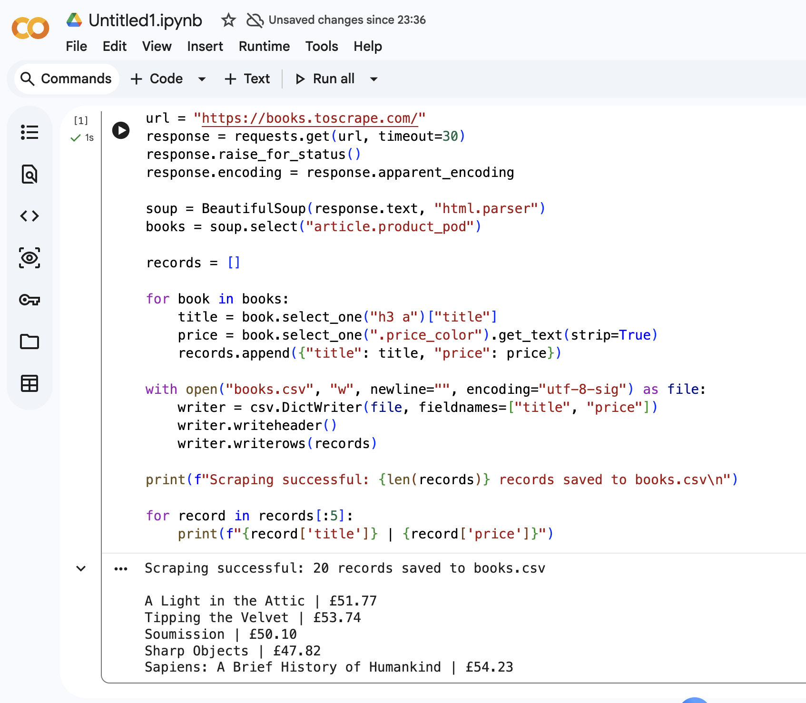
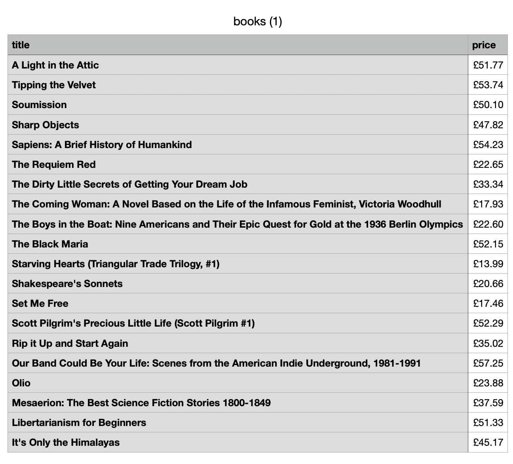
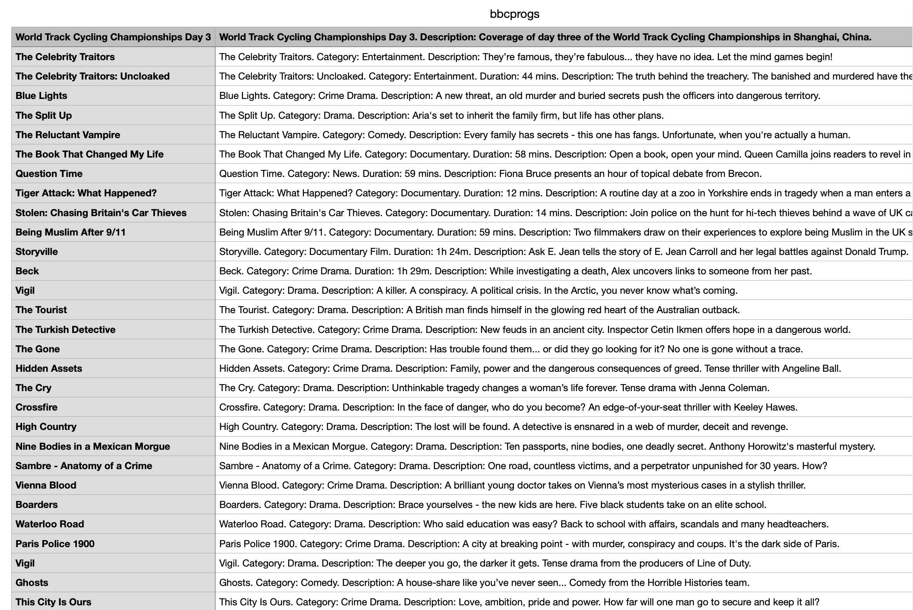

Week 03 · Digital Practices
Web scraping: learning to check what I collect
This week I explored web scraping using the Web Scraper extension in Google Chrome and Python in Google Colab. My understanding was initially vague: I associated looking at source code with finding a way to “break through” a website for my own benefit. Through the workshop, I came to understand scraping as a way of locating information in a webpage and organising it into a dataset. The purpose depends on the question I want to investigate.
From one result to repeated elements
At first, I mainly followed the steps and clicked the suggested buttons without fully understanding each choice. My initial BBC iPlayer selectors targeted the title and description in the hero area at the top of the homepage. When I asked my teacher about my work, they pointed out that I had only collected one record. The extraction worked within that small area, but it did not achieve my intention of collecting multiple programme entries.

I then used a parent selector, programme, to identify repeated programme cards, and a child selector, title, to extract text within each card. The parent allowed multiple matches, while the child took one matching title from each card. This helped me understand nesting: the location of an element matters as much as its tag or class name.

After checking the preview, I ran the scraper and exported the CSV. The downloaded file contained 106 records, with 87 distinct titles and no empty title values. This distinction matters: a programme can appear in more than one homepage section, so 106 records does not mean 106 different programmes. These results describe the selected homepage elements at the time of collection, rather than the complete BBC catalogue.

Trying Python and comparing the methods
I also used Python in Google Colab to collect book titles and prices from the first page of Books to Scrape, a demonstration website. The script requested the page, used BeautifulSoup to locate repeated book cards, extracted the two fields and saved them to a CSV. It returned 20 records, and I opened the downloaded file to check the table.


I also ran the BBC scraping example provided by my teacher. Its output included programme titles alongside descriptive text, with categories and durations where available. Comparing this with my Chrome export helped me see that the same website can produce different datasets depending on the fields selected. Running this supplied example was guided practice rather than code I had written independently.

For me, Python was easier to follow with guidance. The Chrome extension had many buttons and abstract English options, which were difficult to interpret as a non-native English speaker. In the script, I could follow the sequence from requesting the page to saving the results. I used ChatGPT to help me understand the steps and generate code; this does not mean that I can yet write the whole script independently. Both methods still required me to inspect and check the output.
Checking, adjusting and thinking about ethics
The workshop showed me that scraping is a process of repeated checking. A small selector error can return no results, while a selector with too narrow a scope can return a plausible but incomplete dataset. A successful preview also needs to be followed by checking the actual exported file. Rather than assuming that a tool has collected everything I need, I should ask what it included, what it missed and whether repeated entries need to be kept or removed for my research question.
The reading on digital research ethics also made me consider how I would treat personal material in future projects. Public visibility does not necessarily mean that someone expects their words to be collected and republished for research. Contextual privacy and traceability matter: removing a username may not protect someone if a verbatim quotation can be searched online. My BBC and demonstration-book exercises did not involve collecting personal comments, but a different dataset would require different ethical decisions.
What changed in my understanding
I now see a webpage as a structured arrangement of elements, rather than simply what appears on the screen. Scraping makes some of those elements into data through choices about scope, fields and repetition. My most useful learning was not just producing a CSV, but recognising that I am responsible for understanding and checking those choices.
- COMM5780M Week 3 Web Scraping workshop instructions, written by Dr Chris Birchall and updated by the teaching team.
- Tiidenberg, K. (2018). Ethics in digital research. In U. Flick (ed.), The SAGE Handbook of Qualitative Data Collection, pp. 466–479.
- Practice sources: BBC iPlayer and Books to Scrape.
ChatGPT assisted with code, troubleshooting, explanations and drafting this reflection from my account of the workshop. Screenshots show my own practice runs.